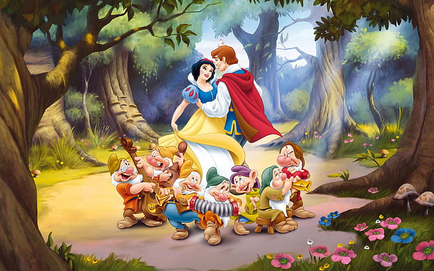
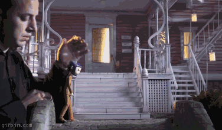
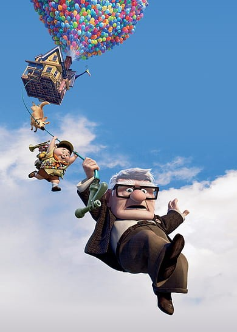
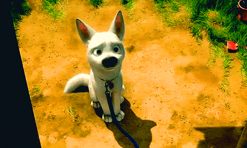

RISANI FILM
|
|
Risani film je tradicionalna oblika animiranega filma.
Tehniko izdelave je poenostavila iznajdba celulojdnih prosojnih listov
na katere se na vsako folijo nariše drug lik. Posebej se nariše še ozadje,
združeno pa več folij skupaj fotografiramo za eno sličico. Za naslednje sličice
folije menjavamo ali premikamo.Izdelane fotografije se z animacijsko kamero ali
optičnim bralnikom prenese v digitalni zapis, na računalnik ali na filmski trak.
Tradicionalni postopek celovečerne animacije je v začetku 21. stoletja postal zastarel.
Primeri risanih junakov so Betty Boop, Popaj, Mickie Mouse, profesor Baltazar, Tom in Jerry.
|

|
|
Snow white is marked with CC0 1.0 |
ANIMACIJA LUTK IN PREDMETOV
|
|
Animacija lutk in predmetov se z angleškim izrazom imenuje stop motion animacija.
V tem primeru snemamo s fotoaparatom sliko za sliko. Iluzijo gibanja ustvarjamo
s premiki, gibi različnih predmetov ali figur, izdelanih iz različnih materialov.7
Priljubljeni so mehki gnetljivi materiali, saj preprosteje ustvarimo spremembe oblikam.
Figure iz barvnih papirjev animiramo s premikanjem izrezanih ali trganih koščkov.
Pri izdelavi tovrstni animacije potrebujemo fotoaparat na stojalu, primerno osvetlitev
in ustrezno ozadje.Po izdelanem scenariju in snemalni knjigi se animator s skupino
lahko loti dela. Scenograf z uporabo različnih materialov izdela tridimenzionalno sceno.
Primeri takih animiranih filmov so The corpse bride, The night before christmas, Bacek Jon.
|

|
|
Coraline © 2011 by Puppet Animator is licensed under CC BY-NC 4.0 |
RAČUNALNIŠKA ANIMACIJA
|
|
Računalniška animacija je novejša tehnika izdelave animacije, ki jo je prinesel
tehnološki razvoj. Različne programske opreme nudijo posebne učinke, spremembe svetlobe,
barv, površine, gibov, različne izrazne možnosti ..., kar prenašamo na izbrane like in
jih ravno tako animiramo sličico za sličico. Program jih sestavlja v končno obliko, animacijo.
Računalniška animacija ni v bistvu nič drugega kot uporaba algoritmov računalniške grafike v praksi,
zajema različne tehnike, bistveno pri njej pa je, da se ustvarja s pomočjo digitalne tehnologije.
Eden izmed prvih prikazov računalniške animacije je bil v filmu Futureworld (1976).
Filmska industrija danes precej uporablja računalniško animacijo, da dosežeposebne učinke.
Primera takih filmov sta The lord of the rings, filmi o Harryju Potterju.
|

|
|
Up © 2022 by LancedSoul is licensed under CC BY-SA 4.0 |
|
2D IN 3D ANIMACIJA
|
Animacija je lahko 2D (dvodimenzionalna) ali 3D (tridimenzionalna), odvisno od uporabe
oblik in prostora, v katerem je posneta. Tridimenzionalnost je možno z današnjo razvito
računalniško tehnologijo močno približati resničnosti. Tudi filmska industrija danes
precej uporablja računalniško animacijo, da doseže posebne učinke.
Tehnike 2D animacije se običajno osredotočajo na manipulacijo slik, medtem ko
3D tehnike običajno gradijo virtualne svetove, v katerih se liki in predmeti premikajo.
2D animacijske figure se ustvarjajo ali urejajo v računalniku z uporabo 2D bitne grafike
in/ali 2D vektorske grafike. 2D animacijo je mogoče ustvariti z različno programsko opremo,
na primer tudi v Power Pointu.
|

|
|
Bolt © 2014 by redbandita is licensed under CC BY-NC 4.0 |